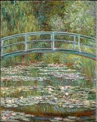
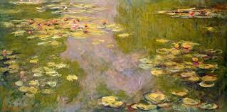
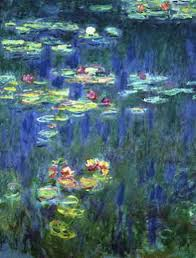

MONET
Los reflejos del lago

Los reflejos del lago
Cuando las lilas florecieron, Monet las pintó con pinceladas cortas y gruesas de color concentrado, en esta obra aparece el efecto flotante de una capa de flores, la cual se reparte entre zonas soleadas y sombreadas.

La claridad del lago
Su pincel no buscaba comunicar una historia ni dar una instrucción moral al espectador, sino que ponía en el lienzo impresiones en función de las sensaciones experimentadas por el ojo.

el amor extendido en las sombras
Las pinceladas puntillistas, que pintó en sus cuadros con propiedad de maestro, son el origen de el arte pictórico moderno.